1. Travel through the North of Spain
1. Travel through the North of Spain
August 5 to 11, 2021
Day 4, towns of Burgos and Vitoria
August 8, 2021
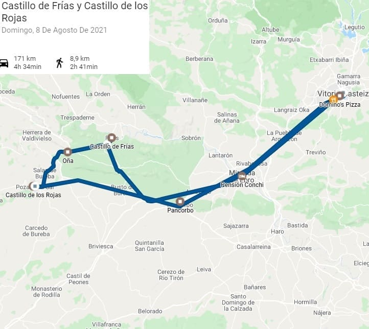


16. Frías
16. Frías
 I leave Miranda early to get to Frías and to make a circuit of several towns in Burgos. Before reaching Frias, I would stop in a mountainous area where the hermitage of Nuestra Señora de la Hoz is located. It is a crossing point on the Camino de Santiago and formerly it also functioned as a hostel for pilgrims. To reach it, a bridge of Roman origin crosses the river.
I leave Miranda early to get to Frías and to make a circuit of several towns in Burgos. Before reaching Frias, I would stop in a mountainous area where the hermitage of Nuestra Señora de la Hoz is located. It is a crossing point on the Camino de Santiago and formerly it also functioned as a hostel for pilgrims. To reach it, a bridge of Roman origin crosses the river.
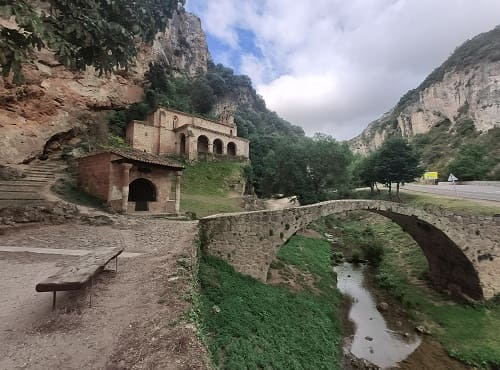
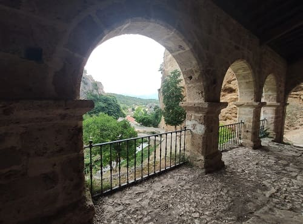
Frias stands out for the setting in which it is located, with its movie castle at the top of the mountain, and its cobbled streets with a medieval touch. You can see the entire town from one of the viewpoints at the top, from the castle to the church.
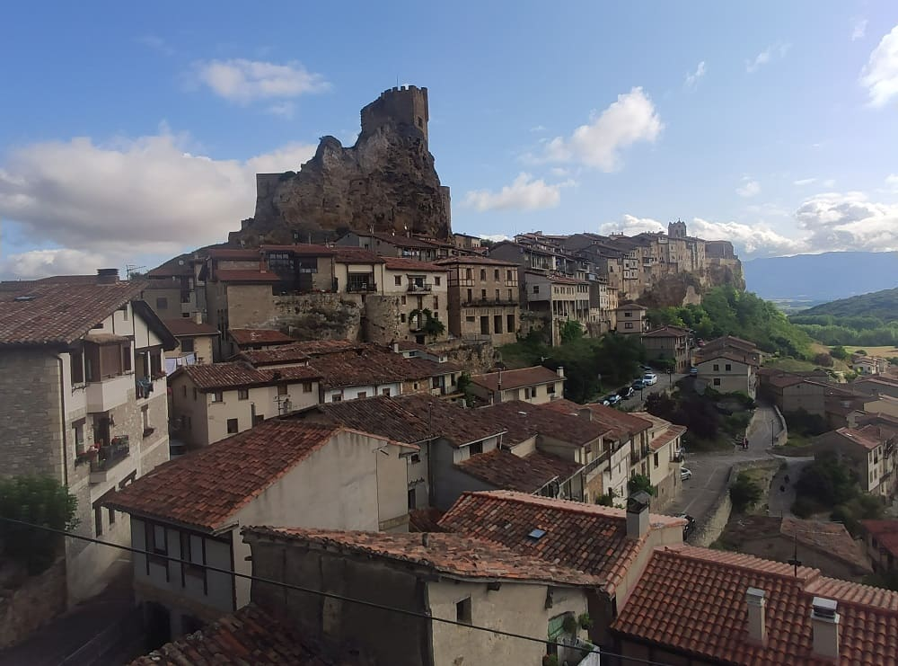
Then he would go down with the car to climb the slope that leads to the castle. It is one of the most beautiful towns in Spain and is little known because the road that goes to it does not pass through any big city. Its streets, the structure of the town and the natural environment make it a unique place.
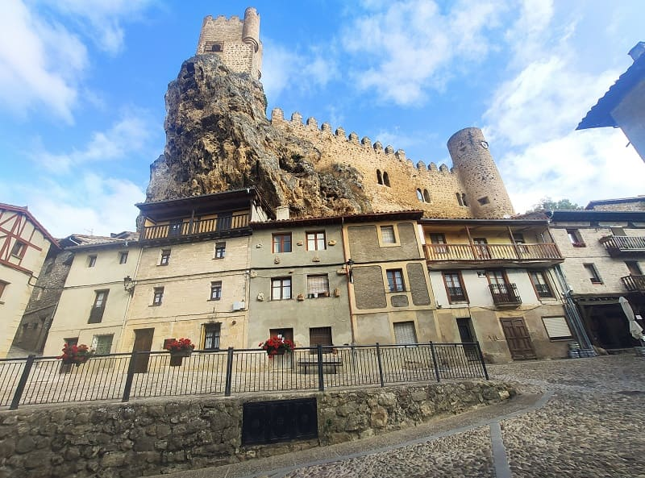
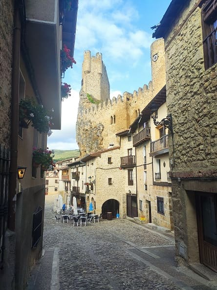
It also has some houses that seem to cling to the rock like the Hanging Houses of Cuenca. In fact there are more houses than in Cuenca and at the top there is a wall that surrounds the top of the town.
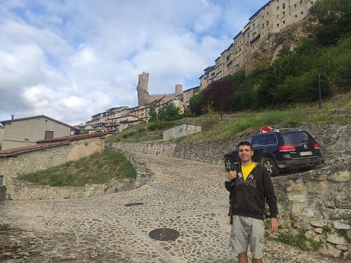
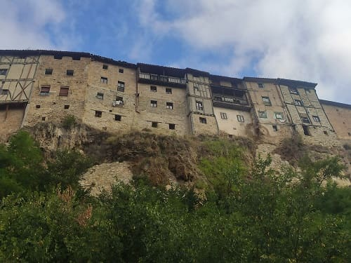
At the top of the town is the church of San Vicente, with a wide lawn that, due to the heights, reminds me a lot of the house of the governor of Gondorn in the Lord of the Rings. And you can also access the castle now.
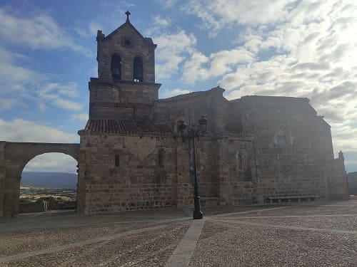
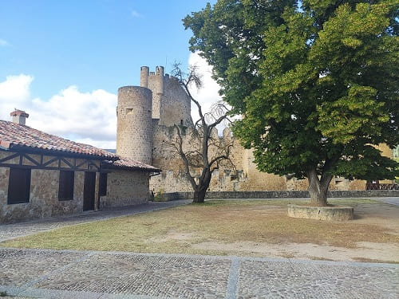


17. Oña
17. Oña
After strolling through Frias, I head towards
Oña, a town quite lost in the mountains of Burgos with a treasure inside. This treasure is
the monastery of San Salvador de Oña, where many of the first kings of Castile rest after the reconquest. It was founded by Castilian nobles and the king would take the Cluny religious congregation there. It must be taken into account that Burgos was the origin of the Castilian we know today and that the north was one of the first territories controlled by Castile until the occupation of the capital of Burgos where it would be the capital of the kingdom for several years.
It has been linked to the Castilian nobles and the royalty of that time, founded in the 11th century and modified until the 16th century to give its church and its façade that Gothic aspect.
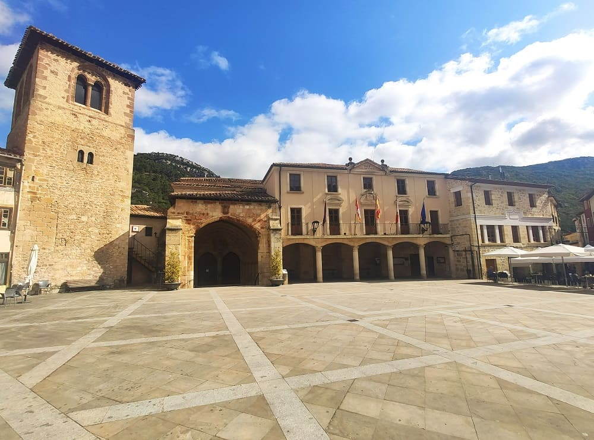
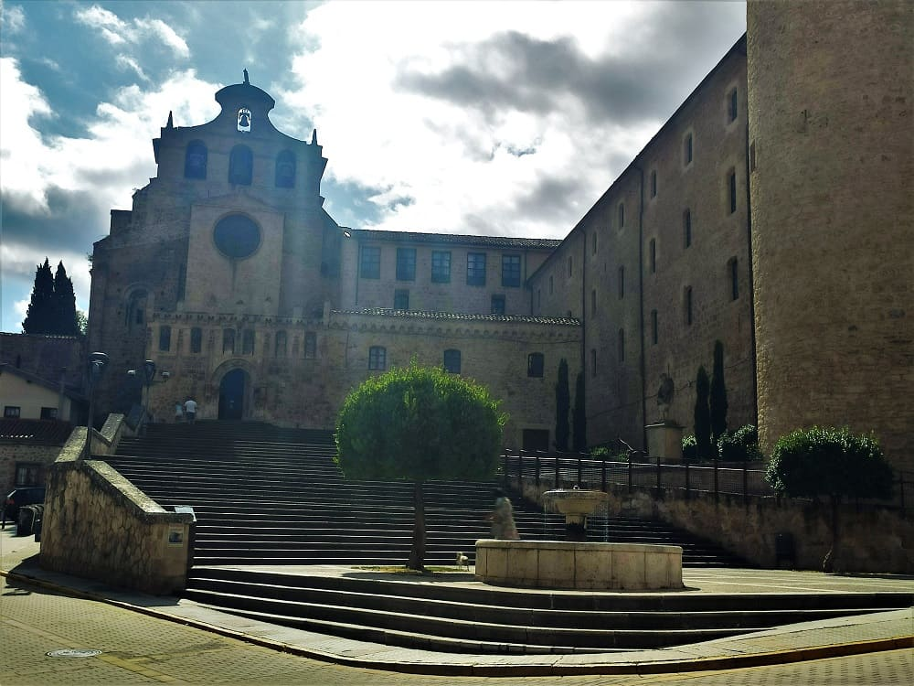
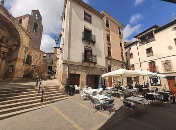
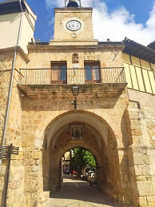
After visiting the monastery and its surroundings, I left for
Poza de Sal, a town known for the salt business in ancient times, for its castle at the top of the town with great views, for the beauty of its streets and for being
the birthplace of the naturopath Félix Rodríguez de la Fuente, who was one of the first to express his rejection of man's changes in the Iberian Peninsula, habitat of a multitude of species that were already threatened. There is a
museum where they show a bit of the life of this great man.
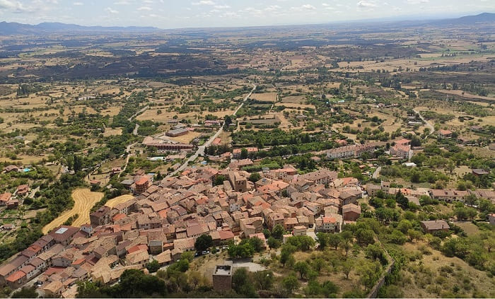
It has the
Church of San Cosme and San Damian at the base of the town, next to
Plaza Vieja. The Plaza Nueva is very large and is below the town since this town has grown from top to bottom. A series of streets that preserves its medieval air leads to the road to the castle, the former palace of the Marquises of Poza de Sal, title granted by Carlos V, times from which the town began to decline.
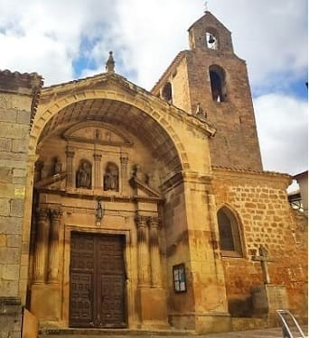
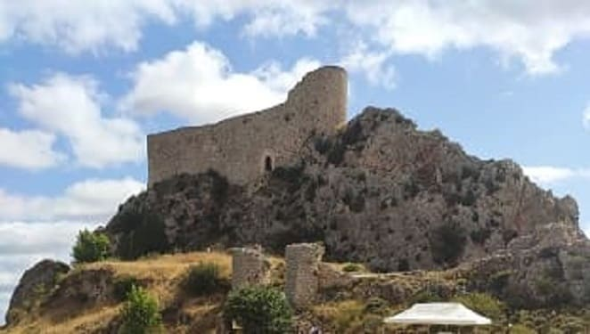
From the top, at the foot of the castle, he would contemplate a falconry show in which different birds of prey would be thrown to do different exercises in the air. There is a falconry association in the town that especially teaches children the importance of these birds for the environment.
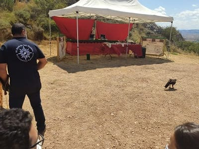
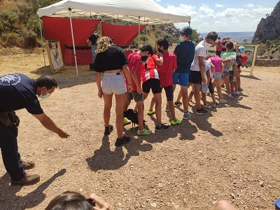


19. Pancorbo
19. Pancorbo
On the way back I would stop at Pancorbo, an important town historically for protecting Castile from the attacks of the kingdoms of Navarre and Aragon behind Miranda de Ebro. The name comes from "curved bridge". In the 10th century it would be the site of battles between Arabs and Christians for possession of its castle. In 1147 it would be given a charter by Alfonso VII, 50 years later that they were given to other towns in La Rioja. At the end of the 15th century, its importance was such that it would be one of the five towns of the Brotherhood of Álava together with Vitoria, Miranda de Ebro, Sajazarra and Salvatierra. In the image the Oroncillo river as it passes through Pancorbo in which a covered bridge crosses it, since the town is on both sides of the river.
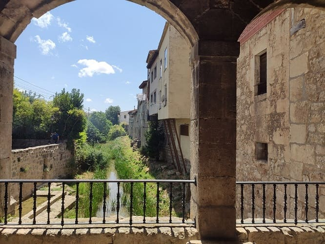
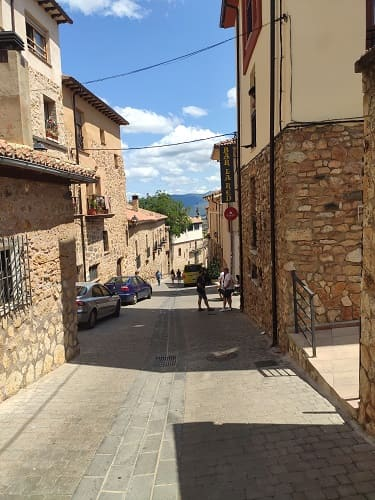
As heritage it has the ruins of the castle that would be demolished in the First Carlist War, as well as the remains of the Santa Engracia fort that was also destroyed.
As religious buildings it has
the church of Santiago and the church of San Nicolas.
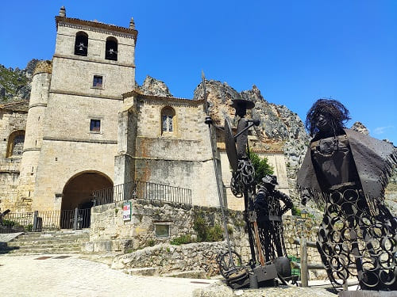
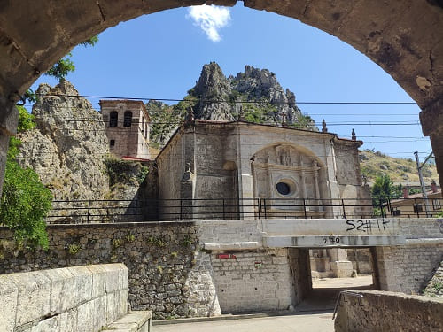


20. Vitoria
20. Vitoria
Finally, in the afternoon I will leave for Vitoria so that in a full afternoon I can see the capital.
The capital of Álava,
Vitoria-Gasteiz, is quite large but its historic center can be seen perfectly in one day. It is also the capital of the Basque Country and where the Ajuria-Enea palace is located, residence of the Lehendakari, president of the autonomous community. If we also know where to park and what to see specifically, in 5 hours it will give us enough time to explore it. It is worth noting the Plaza de la Virgen Blanca with the church of San Miguel Arcángel and the niche of the Virgen Blanca, patron saint of the city. Also next to that square is the Plaza de España, where the town hall is located.
The first settlement in the region is said to have belonged to the Franks and not to the Visigoths. The Arabs did not arrive in that area, so at the time of the reconquest it would be taken over by the kingdom of Navarre. Already at that time there was the church of Santa María la Blanca, the primary temple. Many of the excavations under the cathedral have confirmed that there was a temple and the cathedral was built on top of it.
At the end of the 12th century, the city would pass under Castilian rule and that is where the name of Vitoria arises. It has witnessed numerous events in history, such as the Carlist war in which it would support the winning side, Isabel II or the battle against the French in the war of independence. Also the civil war in which he was a supporter of the rebels. That is why, by always being on the side of the winners, it has enriched and developed more than the province of Guipuzcoa, being the province with the greatest development, although Vizacaya, having Bilbao in it, has almost the same GDP. Since the 1960s, the population has quadrupled due to the strong demand for labor and a time of progress in which it has been favored.
If we start to see this city, we will start from the Plaza de la Virgen Blanca to see the tower of the church of San Miguel where the patron saint of the city, the Virgen Blanca, is located. Very close to it is the Plaza de España or also called "Plaza Nueva", from the end of the 18th century. This square has a cut similar to squares of the time in different parts of the Spanish geography starting with the Plaza Mayor in Madrid, which would be reformed by Carlos III to have its current appearance.

Going up we see
the church of San Miguel Arcángel and we can access its interior. Gothic style built on another church of the same saint in Romanesque style.
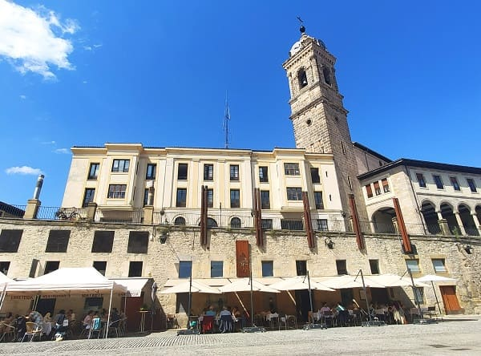
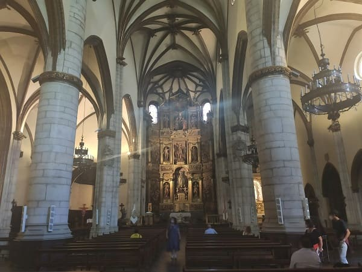
Leaving the church we can see "the Old Square" and the different palaces and buildings that make it up like the one in the following image. From behind we can enter a museum about medieval Vitoria and the history of its 13th century walls. There are archaeological remains inside.
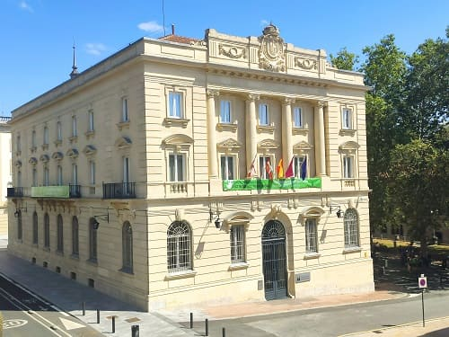
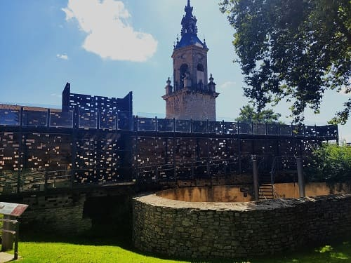
Then we can continue to see different buildings in the old town, to go to Parque de la Florida, where
the Cathedral of Vitoria Immaculate or the so-called New Cathedral of Vitoria is located. This cathedral is one of the few to be built during the 20th century, along with the Almudena in Madrid and Santa Cruz in Tenerife. It is unfinished, since the original project consisted of two towers of a style more similar to the cathedral of Burgos, French style. Even so, it is the second largest church in Spain in terms of square meters and is sometimes used as a
Sacred Art Museum.
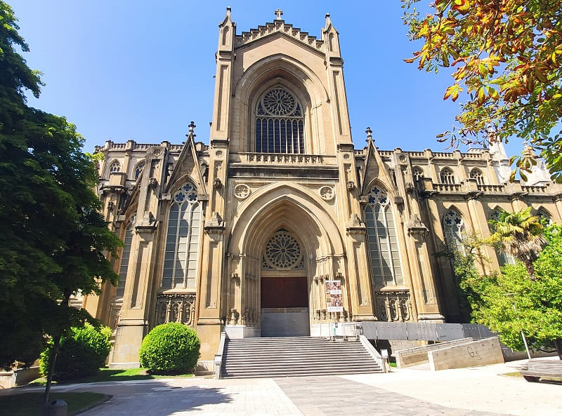
Nearby is the boulevard of Fray Francisco de Vitoria Ibilbidea, where the best palaces of the 20th century in the city are located, such as
the Casa Zuloaga, the Casa de las Jaquecas, the Vitoria Armory Museum, the Museum of Fine Arts or the Ajuria Enea Palace, residence of the lehendakari. These last two in the following images.
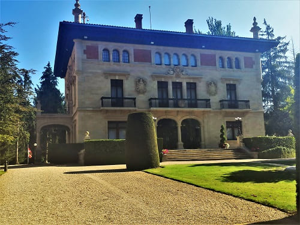
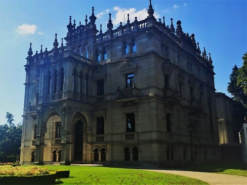
Finally, I would go to see the Old Cathedral of Vitoria, which is the true treasure of the city. The most notable building is
the Cathedral of Santa María which is still under construction and may be
the cathedral that will take the longest to build in all of Spain, as there were problems about 100 years ago because cracks and structural problems were discovered that could have led to its collapse. For this reason, it was planned to completely restore the foundations and do it almost from the beginning, placing the cathedral stone by stone in another place and gradually adding reinforced security elements. In addition to the foundations, the very tower, which is the tallest in the city, has been restored to accommodate many people since it is quite wide in area with different materials including stone and wood. A highly recommended visit due to the fact of having such a long history in construction and such different architectural elements. It also has an audiovisual show for the portico of light in which you can see how it was at different times, which can be seen in the following figures.
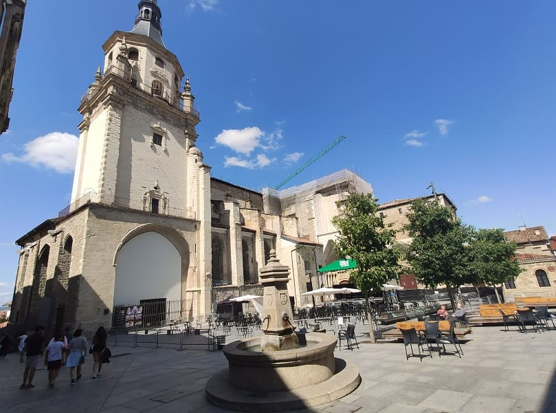
Vitoria is a city where there is an urban art project called
IMVG (Vitoria-Gasteiz Mural Itinerary) . The painted city whose objective is to produce public works of art with the involvement of society in general, so we marked on our route some of the murals that decorate the walls of the city buildings because, I don't know if I have already commented but , I have discovered that I love urban art.
The project is made up, to this day, of 19 murals painted between 2007 and 2019, I understand that it is a living project that has been paralyzed by COVID-19. They are spread throughout the city but we only saw 9 that are in the old town, which is popularly called the Almond of Vitoria, maybe in future visits we can add some more, for now here I show you the ones that we were able to admire during the day we spent in the capital of Álava. That is why there is a great contrast with the age of the buildings that exist, since the colors are quite bright and warm compared to the gray buildings that surround them.
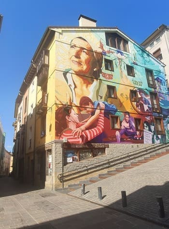
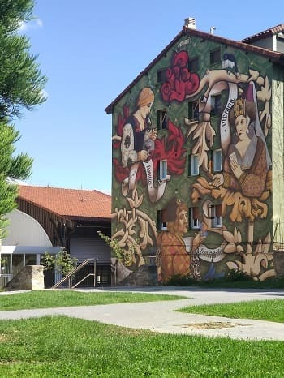
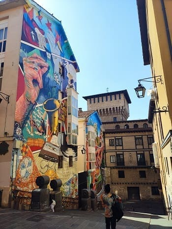
Once the visit is over, I will return to Miranda de Ebro.
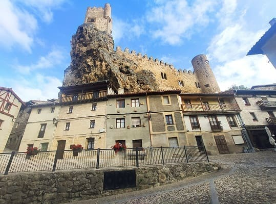
Castillo de los Velasco, sXII. y vista de la ciudad.
16
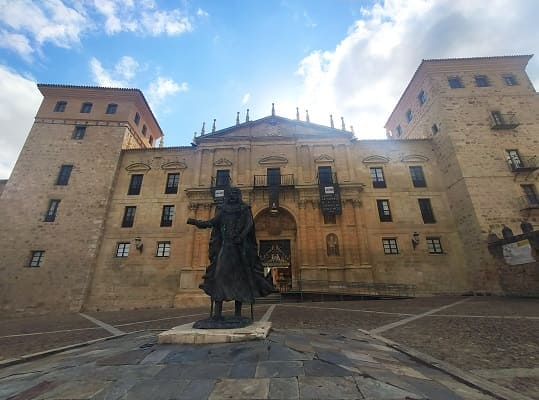
Monasterio de san Salvador de Oña, s.XI.
17
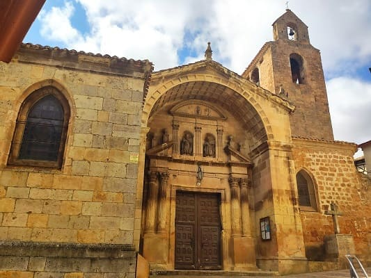
Palacio marqueses de Poza de Sal, s.XII.
18
Iglesia de Santiago, s.XVI.
19
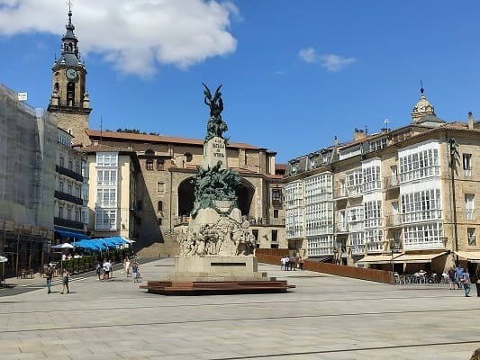
Catedral de santa María, s.XIII.
20
Day 5, passing through Vizcaya on the way to Santander (CLICK to continue)
9th august of 2021
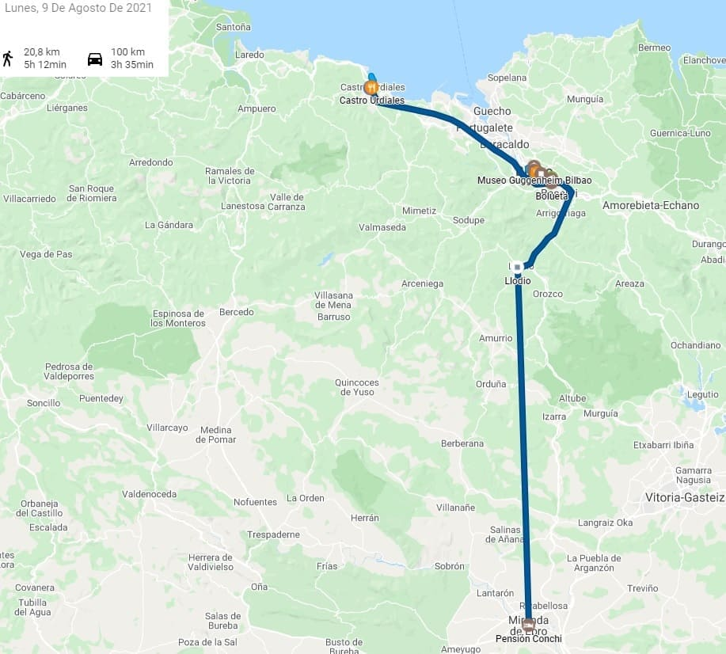
![[Valid RSS]](https://www.onepointsync.com/wp-content/uploads/2016/08/valid-rss-rogers.png "Validate my RSS feed")